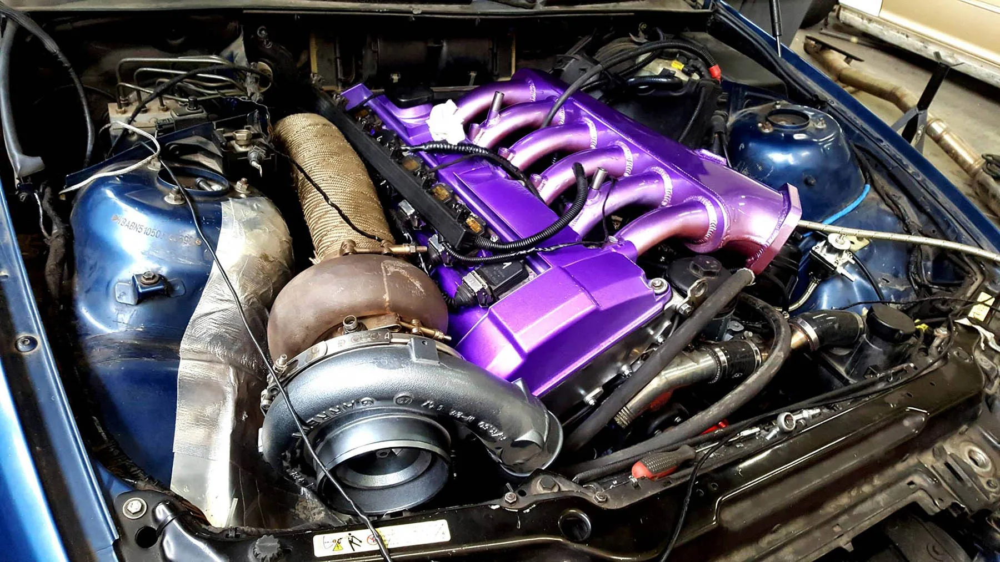

Добро Пожаловать на страницу о легендарных моторах BMW
-
engine M60
Серия M60 включает в себя всего два двигателя — трёхлитровый M60B30 и четырёхлитровый M60B40. Это ознаменовало возвращение концерна BMW, после двадцатипятилетнего перерыва, к производству V-образных 8-цилиндровых двигателей, работающих на бензине.
Двигатели серии M60 изготавливались с 1992 по 1998 год на заводе BMW Plant Dingolfing. Автомобили с этими двигателями в середине девяностых были действительно очень популярными в разных странах.
В какой-то степени их выпуск был логичным шагом со стороны немецкого концерна, эти силовые агрегаты как бы закрывали свободную нишу, образовавшуюся между шестицилиндровыми рядными моторами и большими моторами V12.
Дизайн данных двигателей разрабатывали с использованием автоматизированной системы проектирования (CAD), что позволило свести к оптимальному минимуму их габариты и вес. Кроме того, двигатели M60 характеризуются наличием жидкостного охлаждения и клапанного механизма DOHC.
Силовой агрегат M60B40 предназначался в первую очередь для крупных седанов и для спортивных автомобилей класса купе. Блок цилиндров мотора M60B40 сделан из алюминия, а угол развала прямой — равен 90 градусам. Гильзы здесь обладают никасиловым или алюсиловым покрытием и кованым коленвалом, а головки блока цилиндров оснащены двумя распредвалами и гидрокомпенсаторами. Диаметр клапанов на впуск равен 35 миллиметрам, а диаметр клапанов на выпуск — 30,5 миллиметрам. Характеристики распредвалов М60B40 таковы: фаза 246/242, подъём 9,7/9,4 миллиметра. Управление данным мотором осуществляется цифровой системой Bosch Motronic 3,3.
Слабые места двигателей M60 и ремонтопригодность BMW M60B40 имеет следующие характерные проблемы и поломки: • Двигатель трясёт при холостом ходе. В большинстве случаев данную неисправность можно устранить регулировкой или заменой фаз газораспределения. В некоторых случаях может понадобиться восстановление компрессии и ремонт лямбда-зонда. • Мотор BMW M60B40 потребляет большое количества масла. Этот дефект, как правило, исчезает после установки новых маслосъёмных колпачков и их колец. Если же цилиндры сильно изношены, потребуется так называемая гильзовка или полная замена блока. Кстати, в качестве масла для данных двигателей производители рекомендуют следующие марки — 5W-30, 15W-40, 5W-40, 10W-40. • Не совсем удачно сконструирована система картерных газов (поэтому в следующем поколении M62 она подверглась определённому обновлению). Некоторые из моторов M60B40 преждевременно «умирают» именно из-за неисправностей данной системы. Что касается менее объёмного собрата M60B30, то его проблемы и недостатки аналогичны.
Двигатели BMW M50B25, M50B25TU
-
Engine m50

Покупка автомобиля Bmw для большинства потребителей – это гарантия приобретения качественной машины, которая прослужит значительно дольше конкурентных аналогов. Секрет надёжности автомобилей в контроле их производства на всех этапах – от изготовления деталей до их сборки в узлы и агрегаты. Сегодня популярны не только фирменные машины компании, но и выпускаемые моторы – которые нередко устанавливаются на авто одноклассников взамен штатным ДВС. Немного истории В начале 90-х годов компания БМВ порадовала автовладельцев выпуском нового двигателя M50B25, который заменил устаревший на тот момент агрегат М 20. По сравнению с предшественником удалось добиться высокого коэффициента мощности – была модернизирована цилиндро-поршневая группа, в которой использовались облегчённые и прочные детали, изготовленные по специальной технологии для облегчения веса. Новая версия отличалась стабильной работой – газораспределительный механизм включал модернизированные клапана, которые были значительно легче и имели больший ресурс, чем на М 25. Их количество на один цилиндр составила 4 вместо 2-х, как было ранее. Вдвое облегчился впускной коллектор – его каналы имели идеальную аэродинамику, обеспечивая лучшее поступление воздуха в камеры сгорания. Изменилась конструкция головки блока цилиндров – в ней были выточены постели под два распределительных вала, которые обслуживали 24 клапана. Порадовало автолюбителей наличие гидрокомпенсаторов – теперь не требовалась регулировка зазоров, достаточно было лишь следить за уровнем масла. Вместо ремня ГРМ на данном ДВС впервые была установлена цепь, которая регулировалась гидравлическим натяжителем и требовала замены только после прохождения 250 тыс. км пробега. Производитель модернизировал систему зажигания – появились индивидуальные катушки, работа которых регулировалась системой управления двигателем «Bosch Motronic 3.1». Благодаря всем нововведениям мотор обладал практически идеальными показателями мощности того времени, имел низкий расход топлива, высокий экологический класс и был менее требователен к техническому обслуживанию. 1992 года двигатель прошёл очередное обновление и был выпущен под названием M50B25TU. Новый вариант был доработан и получил новую систему газораспределения Vanos, были установлены современные шатуны и поршни, а также система управления Bosch Motronic 3.3.1. Мотор производился 6 лет, выпускалось две версии – 2 и 2,5 литра. В начале производства устанавливался на автомобили серии Е 34, затем на Е 36.
Обзор основных конструктивных особенностей мотора: • М50В25 – это рядный шестицилиндровый двигатель, объёмом 2494 см³. Его конструкция представлена чугунным блоком, в котором в один ряд располагается шесть цилиндров, диаметром 84 мм. Мотор обладает хорошими показателями крутящего момента (245 Нм/об.мин) и мощности (192 л.с.), дающих возможность полного контроля над автомобилем как в пробках, так и на загородной трассе. Важно отметить, что аппетиты для данных параметров вполне умеренные – расход горючего составляет от 8,7 до 11,5 л/100 км в зависимости от режима езды. • Система охлаждения жидкостная, циркуляция обеспечивается при помощи насоса, приводимого в движение от шкива коленчатого вала. Термостат регулирует потоки антифриза по большому или малому кругу, обеспечивая полноценный температурный режим работы двигателя. • Система смазки обеспечивает подачу масла к основным трущимся узлам при помощи давления, нагнетаемым насосом шестерёночного типа, который расположен в поддоне. Для улучшения работы агрегата, а также для предотвращения засорения масляных каналов в системе установлен специальный фильтр; • Кривошипно-шатунный механизм представлен шестью коваными облегчёнными шатунами и поршнями, ход последних составляет 75 мм. Под их действием вращается коленчатый вал, передающий крутящий момент на трансмиссию автомобиля. Степень сжатия для классического варианта ДВС – 10,0, для М50В25TU – 10,5. • Система зажигания включает по одной катушке на каждый цилиндр, работа которых контролируется при помощи системы управления двигателем Motronic 3.1. Данная конструкция обеспечивает бесперебойное воспламенение рабочей смеси; • Газораспределительный механизм представлен цепью ГРМ, гидронатяжителем, двумя распредвалами и клапанами с их направляющими – на каждый цилиндр приходится по 2 впускных и два выпускных клапана. При вращении коленвала цепь обеспечивает синхронное движение распределительных валов, которые поочерёдно открывают клапана.
Особенности двигателя M50B25TU Данная серия является более совершенной версией – изменения были внедрены спустя 2 года после выпуска основного двигателя. Целью для инженеров было снижение шума, увеличение коэффициента полезного действия и сокращение расхода топлива. Главными доработками М50В25TU являются: • Использование новой системы управления DME 3.3.1 и контролёра Siemens MS 40.1, которые позволяют осуществлять оптимальный контроль над основными процессами работы двигателя. Это позволило повысить мощность и снизить расход горючего; • Изменение конструкции кривошипно-шатунного механизма – в новой версии используются более совершенные детали, отличающиеся прочностью, лёгкостью и повышенным ресурсом эксплуатации. Увеличилась степень сжатия, на коленчатом вале появились новые противовесы для снижения осевого биения и вибрации; • Был модернизирован ГРМ – на новой серии используются более лёгкие и прочные толкатели клапанов. Возвращение клапана в исходную позицию осуществляется при помощи одной пружины; • Мотор получил другую модель датчика холостого хода, который поддерживает оптимальный режим работы ДВС на холостых оборотах, согласно обновлённым параметрам. Ещё одной отличительной особенностью двигателя является наличие системы Vanos, регулирующей работу газораспределительного механизма в зависимости от нагрузки, температуры охлаждающей жидкости и других характеристик.
Надёжность мотора Двигатели БМВ являются одними из самых надёжных, и наш M50B25 – не исключение. Основными особенностями конструкции, которые увеличивают ресурс работы силового агрегата, являются: • Использование цепи вместо ремня – замена требуется гораздо реже, а надёжность выше; • Установка гидрокомпенсаторов – не требуется плановая регулировка; • Применение новых систем контроля двигателя (DME 3.3.1, Siemens MS 40.1, Vanos) – увеличивает ресурс запчастей, поскольку оптимизирует работу ДВС; • Множество деталей изготовлено из высокопрочных сплавов. Ресурс, который устанавливает завод-изготовитель составляет 400 тыс. км пробега. Но согласно отзывам автолюбителей – при соблюдении режима эксплуатации и своевременной замене масла эту цифру можно смело умножать в 1,5 раза.
Двигатель S62b50
-
Engine s62b50
Для топовой версии М5 Е39 был разработан новый бензиновый двигатель с индексом S62. В отличие от предыдущего поколения M5 E34 где была рядная шестерка , S62 был восьмицилиндровым V-образным двигателем объёмом 5 литров, выдающим 400 л.с. (294 кВт) при 6600 об/мин. За основу был взят гражданский М62, который в свою очередь имел алюминиевый блок и алюминиевые головки блока цилиндров. В головке блока цилиндров применяется система Double VANOS, позволяющая изменить фазы газораспределения. Двигатель имеет восемь дроссельных заслонок, по одному дросселю на каждый цилиндр. Глубоко доработана головка блока цилиндров, увеличены впускные и выпускные каналы. Заменены два распределительных вала с большим подъемом клапана и более широкой фазой.
В блоке увеличен диаметр каждого цилиндра до 94 мм, установлен балансированный и облегчённый коленчатый вал ходом поршня в 89 мм и кованные шатуны, что привело к увеличению объем двигателя до 4941 куб.см. Для лучшей циркуляции масла в системе и теплоотдачи, установлено 3 масляных насоса, два откачивающих и один подающий. Охлаждение поршня происходит масляными форсунками. В отличие от М62, на S62 применены две цепи привода ГРМ.
В блоке увеличен диаметр каждого цилиндра до 94 мм, установлен балансированный и облегчённый коленчатый вал ходом поршня в 89 мм и кованные шатуны, что привело к увеличению объем двигателя до 4941 куб.см. Для лучшей циркуляции масла в системе и теплоотдачи, установлено 3 масляных насоса, два откачивающих и один подающий. Охлаждение поршня происходит масляными форсунками. В отличие от М62, на S62 применены две цепи привода ГРМ.